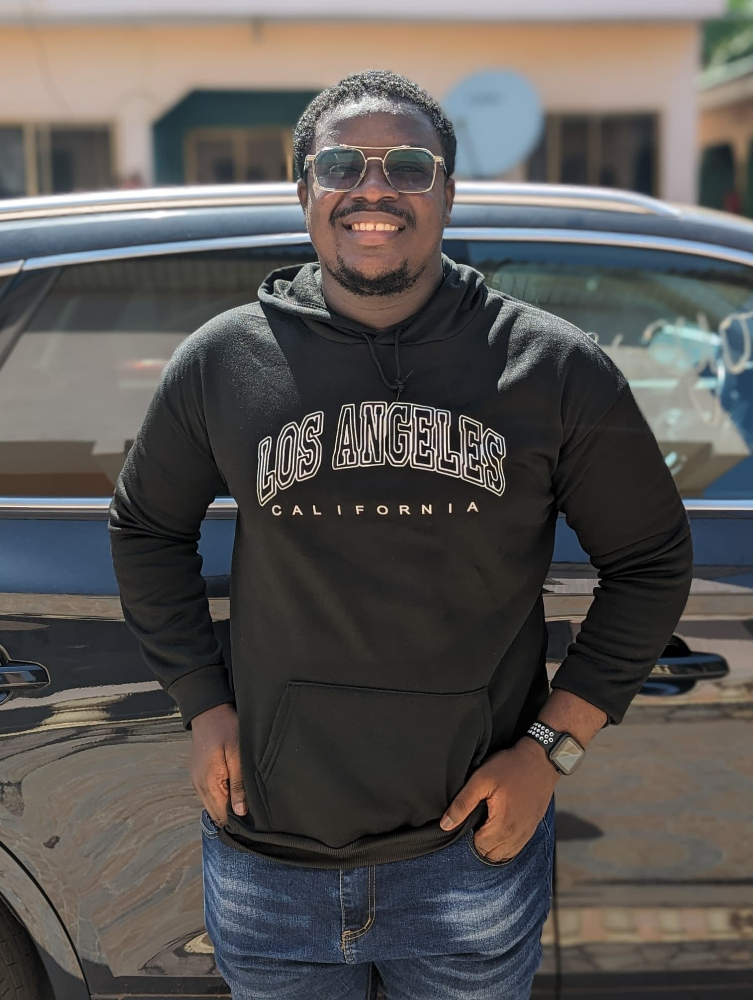

Web applications
Fast, accessible interfaces and reliable systems built with React, Next.js, Angular and TypeScript.
Explore work ↗I design and build useful web, mobile and cloud products. From first idea to production launch, I turn complex challenges into clear, dependable experiences.

✳ Services
Fast, accessible interfaces and reliable systems built with React, Next.js, Angular and TypeScript.
Explore work ↗Useful mobile experiences that connect people to services, commerce and information with Flutter.
Explore work ↗Cloud deployment, automation and CI/CD workflows that help teams ship confidently and often.
Explore experience ↗✳ About me
I’m a senior software engineer based in Accra. I lead projects from architecture through deployment, pairing thoughtful product design with solid engineering.
My work spans healthcare, industrial technology, commerce and accessible education. I’m driven by products that solve real problems for real people.
✳ Selected work
A few products and initiatives I’ve helped bring to life.
Interfaces and deployment workflows for a radiology platform supporting clinical teams.
A learning initiative for hearing-impaired students recognized at the Enactus Ghana National Competition.
A web and mobile platform for global import and export.
A flow measurement and monitoring platform built with Angular and TypeScript.
✳ The journey
Teams and products that shaped my work.
Bragoro Limited · Part-time
Technical strategy and products focused on empowering women.
AMS1ONE Solutions
Led web and Flutter projects serving 50,000+ users and introduced faster Azure DevOps deployments.
Grundfos
Built the Connect Flow Meter platform with Angular and TypeScript.
Chestify AI Labs
Built React interfaces for radiology workflows and improved cloud delivery.
✳ Favorite tools
AWS Certified Cloud Practitioner · B.Sc. Meteorology & Climate Science, KNUST
✳ Have an idea?